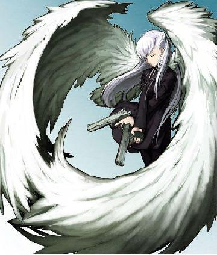

Forums galactiques > Taverne galactique : lieu de discussion informel > Mea Culpa de Zeus, appel à la réinsertion
Pages : 1 2
dieu 28/12 ETU 07:22  | Message HRP mais nécessaire et important. Chers joueurs qui se cachent derrière les commandants, Suite à un échange de mails avec le joueur qui gère Zeus, celui-ci s'est excusé de ses agissements et de son emportement. Il se déclare prêt à rejoindre de nouveau Apocalypsis en adoptant un comportement correct à l'avenir. Je crois en sa sincérité, et précise que si le futur montre que j'ai tort, il n'aura pas de nouvelle chance. Cela dépend de lui. Dieu a tendance à croire que ce jeune joueur peut changer comme il me l'a promis, et qu'il faut l'y aider plutôt que le bannir et le mettre dans une position d'exclu qui ne l'aidera en aucun cas. Ce n'est pas la solution de facilité, mais nous verrons si j'ai raison ou non. Bien entendu, comme triche il y a eu, sanction il y a eu : en plus de l'inactivité de son compte pendant ces quelques jours (ce qui signifie qu'il n'a pas pu toucher de production ni rien gérer), j'ai appliqué une sanction financière sur son compte afin d'être juste envers les joueurs qui ont pu être victimes de son ancien comportement. Cette sanction représente des millions en ressources et largement plus de la moitié de ses stocks. Son compte sera réactivé dans les prochaines heures. IMPORTANT : Quoique vous ait dit Zeus avant le gel de son compte, je prierai tous ceux qui ont planifié une guerre pour des raisons IRL (en gros punir le joueur de sa triche) de méditer ces faits : le joueur de Zeus a payé sa dette concernant le problème IRL. Il se présente maintenant comme un joueur nouveau. Il serait intelligent de lui laisser sa chance de se racheter en RP, en évitant de l'exterminer dans les 2 jours. Maintenant, ceci n'est pas un "ordre divin", puisque je n'ai pas à intervenir sur les conflits RP, et n'interviendrai pas. J'espère simplement que Zeus pourra se réinsérer dans l'Univers de façon à ce qu'il ne regrette pas d'avoir fait profil bas, et que je ne regretterai pas de m'être donné ce mal. S'il se fait exterminer comme s'il n'avait pas décidé de changer, j'aurais un peu l'impression de m'être donné beaucoup de mal pour rien, et je noterai que certains commandants sont incapables de passer au-delà d'une logique de vengeance hargneuse. Je souhaiterais simplement que tout le monde oublie l'ancien Zeus, et voit le nouveau sous un nouveau jour, sans lui accrocher le label de hors-la-loi, puisque je considère qu'il a maintenant payé sa dette, et que s'il récidive son destin sera vite réglé. A méditer, donc... J'en profite pour vous prévenir que mon 1/3 de Dieu s'absente pour quelques jours, merci donc d'éviter de submerger de MPs le compte Dieu, qui sera administré pour les choses importantes par notre Macolu préféré (admin programmation). |
Péricles 28/12 ETU 09:27 | Joyeux noel Zeus :D |
Salyin 28/12 ETU 10:13 | Je pense que je vais retirer mes troupes. |
Leto Atréides 28/12 ETU 10:34 | Bonnes vacances, Dieu. Espérons que Zeus profite de la seconde chance qui lui est donnée pour s'intégrer à notre population ! Bien joué, Dieu ! |
Spectror 28/12 ETU 10:37 | Euh, Zeus a aussi attaqué des commandants sans aucune raison franchement valable, et c'est purement RP, si maintenant on doit retirer nos troupes il recommencera... |
| D4rkpheoniX  28/12 ETU 10:45 | je lui ai parler et il s'engage a ne plus attaquer personne quand il reviendra . Juste a rattaquer les planete en insurection ou si on l'attaque . Je vous le promet spector |
Maedhros 28/12 ETU 10:54 | Beuhh Je venait juste d'envoyer mes biaux vaisseaux. Bon je les ramenes a la maison....pas drole... |
Obéron 28/12 ETU 11:11 | je vais être obligé, pour des raisons Rp, de continuer un tout petit peu cette guerre. Mais après quelques petites attaques je le laisserai en paix s'il a effectivement changé. |
morgane 28/12 ETU 11:11 | si il se tiens a carreaux il n'y pas de raison |
Maedhros28/12 ETU 11:23 | Euh ... pas d'accord Morgane. Il n'a pas besoin de se tenir a carreau rester dans son coin et ne rien faire.Je ne vois pas l'interet de jouer. Il a seulement besoin d'un rp!! Je pense qu'il lui manque beaucoup de notion en matiere de role. Il faudrait qu'on l'aide a en trouvé un qu'il lui ressemble assez pour "debuter". Une fois le rp determiner,il faut qu'il se rende au FOU mais la ce n'est plus a moi de parler mais au coté absurd de la force. Je pense que le menacer de destruction a chaque attaque qu'il fait,l'attaquer a chaque mouvement brusque ne sert a rien.Meme si je n'ai pas apprecier ce qu'il a fait,Il faut l'aider! Le FOU aide au fôte mais rien n'aide au rp! |
Zarathoustra28/12 ETU 11:24 | Un instant de laxisme engendre une vie entière d'hérésie, N'oublie jamais... Ne pardonne jamais... Puisse le Seigneur Sage absoudre ses péchés pour qu'il puisse atteindre la voie de la Vérité... En attendant ce moment là, s'il se comporte correctement, je ne vois pas de raison de devoir faire les présentations entre lui et Ahura Mazda... Ainsi paralit Zarathoustra. |
Spectror28/12 ETU 11:35 | Non c'est trop facile ça. C'est comme si maintenant je foutais le box, puis pour m'en sortir je m'arrangerais pour me faire bannir et après dire "vui vui je ferai plus rien je serai sage" pour que dieu raconte à tout le monde d'arrêter de m'attaquer... |
D4rkpheoniX28/12 ETU 12:06 | Ba il veut se racheter alors il nattaquera plus . Voila tout . |
Ash Morpheus 28/12 ETU 12:08 | Je ne pense pas qu'il a fait expres de se faire bannir. Donc je vous demanderait d'arreter avec lui. Il se rachetera, j'en suis sur. Donc je vous demande de lui laisser sa chance. Commandant Oberon, laissez vos troupes, mais n'attaquez pas, attendez de voir ce qu'il est devenu. Kenichi |
Improved Carnage 28/12 ETU 13:37 | hmmm , je susi d'accord avec ash ... laissons le se racheter .. |
Péricles28/12 ETU 13:44 | Quand il remarquera que toute les troupes de tout le monde sont a ses portes je vous jrue qu'il va devenir ANGE sa mort se fait sentir mais il n'y a auccun remord a le détruire OUAO je suis poéte :D C'est plus beau que Zarathoustra tout de même ^_^ |
Maedhros28/12 ETU 14:01 | Oui mais debile! Si Dieu veut qu'on lui laisse une deuxieme chance c'est pas pour qu'on le pourrise ou qu'on le menace de partout. Il a pris le temps de regler l'affaire alors qu'il a surement autre chose a faire. Laissez le jouer comme un nouveau commandant pour que dieu n'est pas travaillé dans le vent. Je ne peut rien dire de plus mais relisez les posts de Dieu sur le sujet,c'est pourtant claire,non? |
khornes 28/12 ETU 14:11 | ce qu'il faut,ce sera juste le surveiller...son absence lui aura donner un retard scientifique énorme,et il a eu une punition économique...il ne sera plus aussi dangereux. Il faudra juste le surveiller. |
Commandant Kerstan 28/12 ETU 15:15 | Je veux bien lui laisser une deuxième chance, aucun problème pour ça, mais j'aimerais aussi qu'on me rende ce qu'il m'a prit lorsqu'il m'a attaqué sans aucune raison RP, n'est-ce pas D4rkpheoniX ? Ce ne serait que justice non ? |
Ash Morpheus28/12 ETU 15:21 | Je vois que presque tout les commandant sont d'accord avec le fait qu'il faut lui laisser sa chance, donc merci de lui la donner, il en va de la suite de la galaxie. Il se rachetera, donc arretez toute attaque svp merci |
Pages : 1 2
Forums galactiques > Taverne galactique : lieu de discussion informel > Mea Culpa de Zeus, appel à la réinsertion